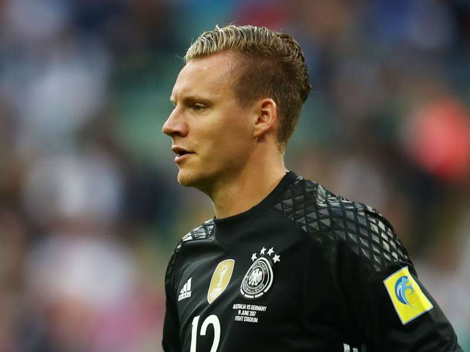

Kanonierzy na #Euro2020
Spotkaniem Turcji z Włochami zainaugurujemy Mistrzostwa Europy 2020. Arsenal posłał na ten turniej czterech piłkarzy. Poniżej prezentujemy rozpiskę spotkań wszystkich Kanonierów, którzy zawalczą o prestiżowe trofeum:
Bernd Leno
Bernd został powołany do składu Joachima Löwa, dla którego to ostatnia taka impreza przed odejściem z kadry.
Niemcy rozpoczną turniej starciem z mistrzami świata Francją we wtorek 15 czerwca, a następnie w sobotę zmierzą się z Portugalią.
Ostatni mecz rozegrają z Węgrami. Wszystkie te starcia odbędą się Monachium.
Wtorek, 15 czerwca: Francja vs Niemcy
Sobota, 19 czerwca: Portugalia vs Niemcy
Środa, 23 czerwca: Niemcy vs Węgry
Granit Xhaka
Granit jedzie na turniej wraz z reprezentacją Szwajcarii. W przypadku awansu do kolejnej fazy, kapitan swojej drużyny może zaliczyć setny występ reprezentacyjny.
Szwajcaria rozpocznie batalię z Walią w Baku w sobotę 12 czerwca.
Następnie w środę zmierzy się z Włochami w Rzymie, a grupowe zmagania zakończy w sobotę przeciwko Turcji w Baku.
Sobota, 12 czerwca: Walia vs Szwajcaria
Środa, 16 czerwca: Włochy vs Szwajcaria
Niedziela, 20 czerwca: Szwajcaria vs Turcja

Kieran Tierney
Kieran awansował do turnieju wraz z reprezentacją Szkocji, która na takiej imprezie pojawi się po raz pierwszy od 24 lat.
Szkoci pierwszy mecz rozegrają z Czechami w Glasgow w poniedziałek 14 czerwca. W piątek zmierzą się w Londynie z Anglią, by następnie stawić czoła Chorwacji we wtorek.
Poniedziałek, 14 czerwca: Szkocja vs Czechy
Piątek, 18 czerwca: Anglia vs Szkocja
Wtorek, 22 czerwca: Szkocja vs Chorwacja
Bukayo Saka Bukayo Saka pierwszy raz w swojej karierze jedzie na turniej z dorosłą reprezentacją, a barwach której będzie nosił koszulkę z numerem 25. Anglia podobnie jak Szkocja trafiła do grupy D, a swój premierowy mecz rozegra w niedzielę 13 czerwca z Chorwacją. Następnie Synowie Albionu w piątek podejmą Szkocję, a zmagania w fazie grupowej zakończą z Czechami we wtorek 22 czerwca. Wszystkie trzy mecze zostaną rozegrane na Wembley.
Niedziela, 13 czerwca: Anglia vs Chorwacja
Piątek, 18 czerwca: Anglia vs Szkocja
Wtorek, 22 czerwca: Czechy vs Anglia